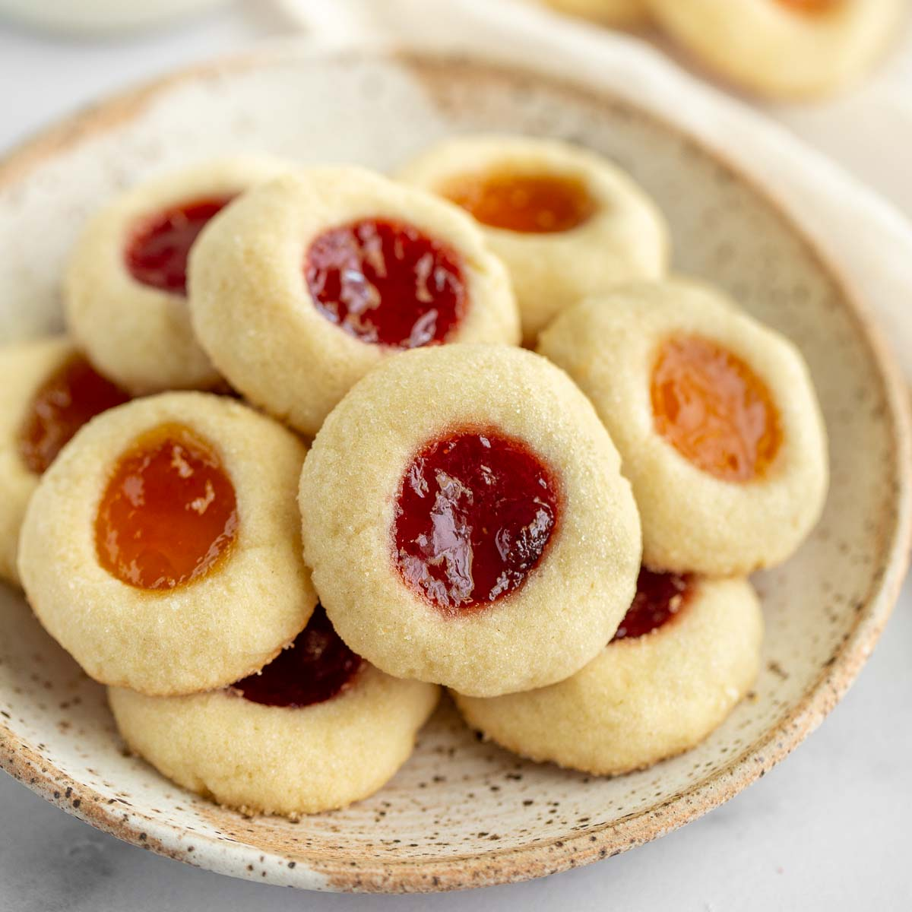

Jelly Cookies
Source: “Surprise-Filled Cookies” from Mrs. Fields Cookie Book
Yield: 4 dozen cookies
Ingredients
- 2 ½ cups all-purpose flour
- ½ tsp baking powder
- 1 cup salted butter, softened
- 1 cup white sugar
- 1 large egg
- 2 tsp pure vanilla extract
- 1 cup fruit jam
Instructions
- Preheat oven to 300F.
- In medium bowl combine flour and baking powder. Mix well with a wire whisk. Set aside.
- In medium bowl with an electric mixer cream butter and sugar. Add egg and vanilla and beat on medium until smooth. Add the flour mixture and blend at low speed until thoroughly combined. Dough will be firm.
- Scoop tablespoonfuls of dough, roll into 1-inch-diameter balls and place on ungreased baking sheets, 1 inch apart. With the small end of a melon baller, scoop out the center of the dough balls. Do not scoop all the way through the cookie. Place ½ teaspoon of jam in the center of each dough ball. Place scooped-out dough back into mixing bowl to use to form more cookies.
- Bake 22-24 minutes or until light golden brown. Transfer to a cool, flat surface.